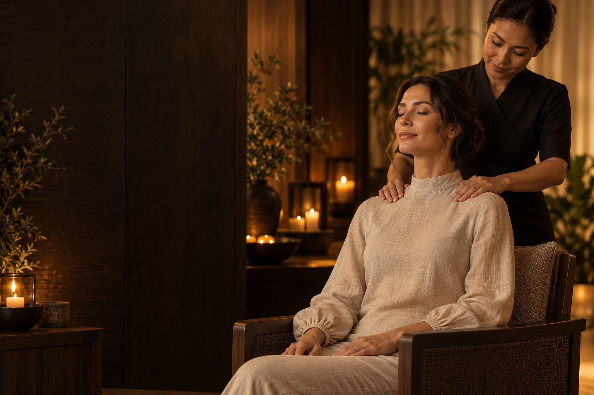

МИСТЕЦТВО ПОВІЛЬНОГО ЖИТТЯ
Ваше тіло
заслуговує
більшого.
Залиште напругу за дверима.
Знайдіть свій ритм. Відчуйте себе знову.
01 — ПОЧНІТЬ ІЗ СЕБЕ
Не обирайте масаж.
Розкажіть, що відчуваєте.
Іноді тілу потрібна глибока робота. Іноді — лише тепло й тиша. Кілька простих відповідей допоможуть скласти сеанс під ваш настрій і бажаний темп.
Прислухатися до тіла ↗YOUR BODY, YOUR SESSION
Де хочеться
більше легкості?
Оберіть зону на силуеті або у списку.
Ми почнемо ваш ритуал саме з неї.
Не знаєте, з чого почати?
теж частина
руху вперед.»
Один вибір.
Більше уваги до себе.
02 — РИТУАЛИ ТУРБОТИ
Як ви хочете
почуватися?
Три настрої. Три різні темпи.
Знайдіть той, що потрібен сьогодні.
Послуги та ціни наведені для демонстрації концепту. Підбір відображає побажання, а не медичний висновок.
03 — ВІДЧУЙТЕ АТМОСФЕРУ
Світ зачекає.
Цей час — ваш.
Тепле світло. Натуральні текстури.
І жодної потреби кудись поспішати.
04 — УВАЖНІ РУКИ
Важливо, кому
ви довіряєте.
Оберіть близький вам підхід.
У демоверсії представлені вигадані профілі.
МАЛЕНЬКИЙ ЖЕСТ. ВЕЛИКЕ ВІДЧУТТЯ.
Подаруйте
60 хвилин тиші.
Подарунок, для якого не потрібен привід.
Створіть персональну картку-побажання.
для себе.60 ХВИЛИН ТИШІ ✳
05 — ПЕРЕД ПЕРШИМ ВІЗИТОМ
Ви можете
просто бути собою.
Трохи ясності, щоб спокій
починався ще до зустрічі.
Як обрати свій перший масаж?+
Почніть із карти тіла та бажаного темпу. Конструктор покаже приклад сеансу за вашими побажаннями. У реальній студії процедуру й інтенсивність варто узгодити з майстром.
Чи можна змінити інтенсивність?+
Так, у конструкторі є м'яка, середня та інтенсивна робота. Під час справжнього сеансу завжди повідомляйте майстру, який дотик для вас комфортний.
Що робити, якщо є обмеження?+
Якщо маєте травму, нещодавню операцію або інші обмеження, перед записом уточніть можливість процедури у кваліфікованого спеціаліста. Ця демоверсія не оцінює стан здоров'я.
Чи справжній це онлайн-запис?+
Ні. Це інтерактивний проєкт для портфоліо. Розклад, профілі та ціни демонстраційні. Сайт не надсилає заявки, не приймає платежі й не збирає контактні дані.
ПОВЕРНІТЬСЯ ДО СЕБЕ